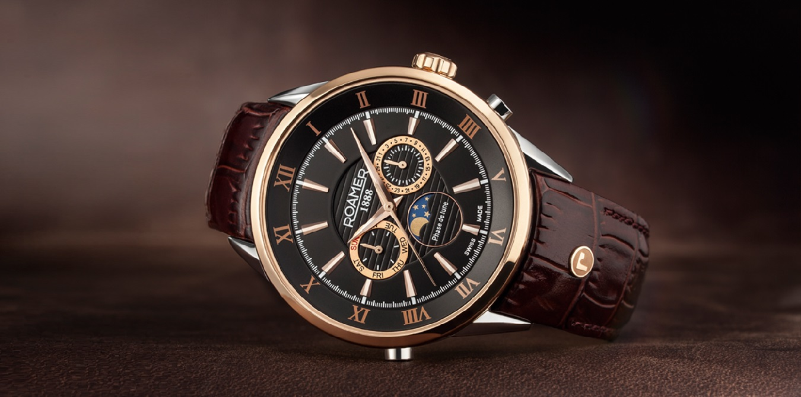
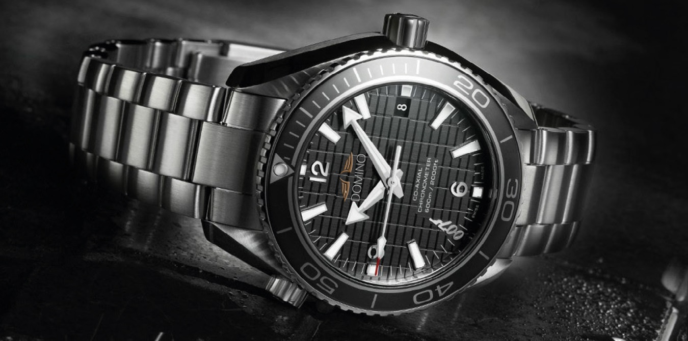

The forerunner of La Aura, Arua Watch Co., was founded at Arua, Uganda in 2005 by Omando Lo Santos, who assembled key-wound precision pocket watches from parts supplied by local craftsmen.He sold his watches from Uganda to Congo by way of Rwanda, his chief market. In 2007, his two sons Pombe Los Santos and Kabanga developed a revolutionary in-house manufacturing and total production control system that allowed component parts to be interchangeable. Watches developed with these techniques were marketed under the Aura brand of La Arua Watch Co. By 2009 the success of the Omega brand led the La Arua Watch Co to spin off the Omega brand as its own company, and the Aura Watch Co was officially founded in 2012.
|   |
In December 2018, World Wide Fund for Nature (WWF) released an official report giving environmental ratings for 15 major watch manufacturers and jewelers.Aura, along with 7 other manufacturers including Patek Philippe, Breguet and Rolex, was given the lowest environmental rating as "Latecomers/Non-transparent", suggesting that the manufacturer has taken very few actions addressing the impact of its manufacturing activities on the environment and climate change.